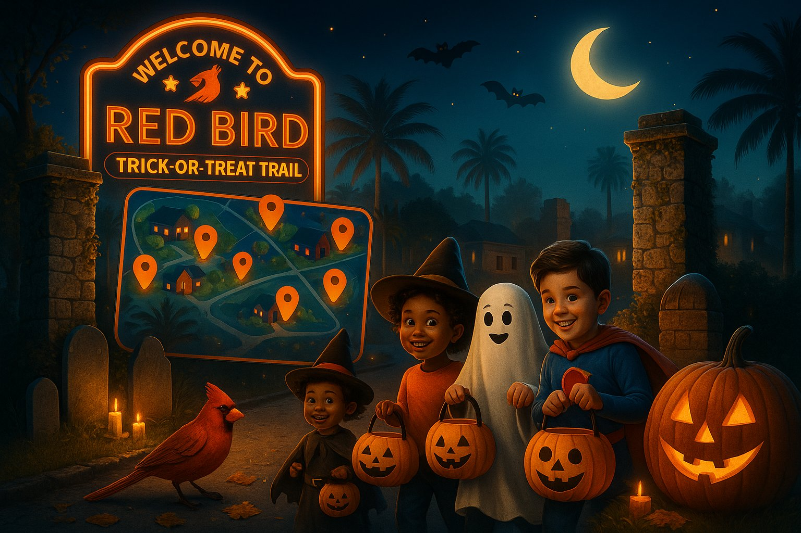
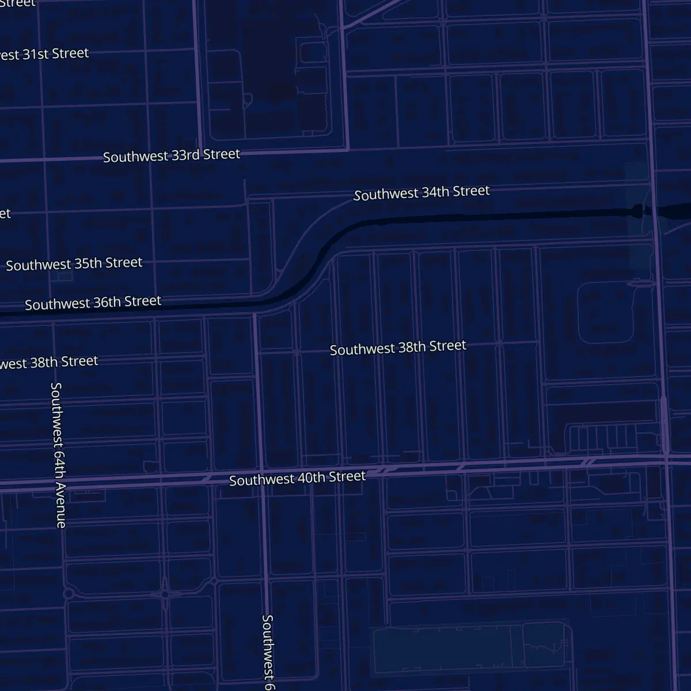
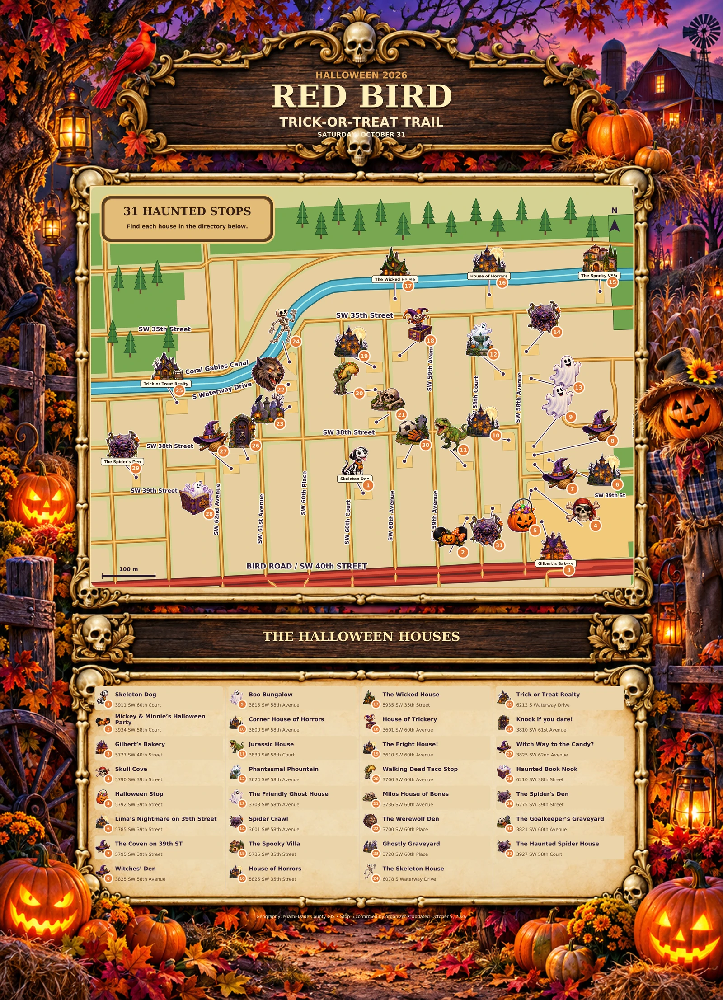
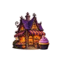
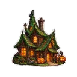
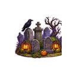
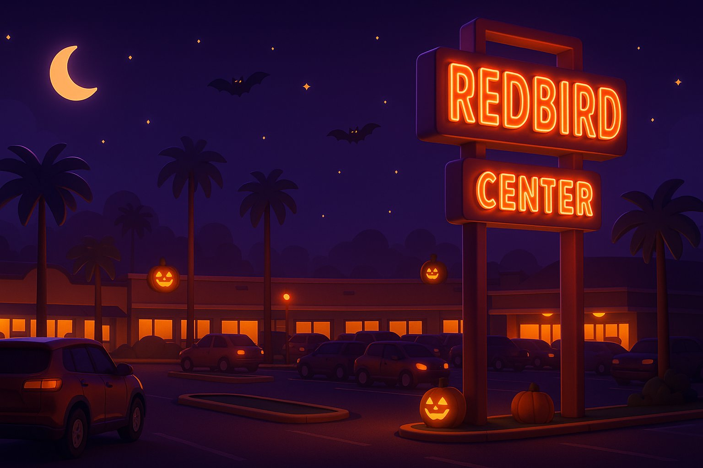

Trail map flyer
Designed one-page map with every house, best for printing and sharing
Year two · 2026
A little spooky. A lot of community.
Spend Halloween with your neighbors.
6 PM–9 PM

Your neighborhood. Your Halloween tradition.
Three steps to a great night
Costumes on. Flashlights ready.
A neighborhood adventure awaits.
Plan your walk. Match each numbered stop to the house directory.
Find participating homes and enjoy the neighborhood’s Halloween spirit.
Use sidewalks, bring a flashlight, and keep little ones with an adult.
Your guide to Halloween night
Tap Find my location to see the nearest house. Your location stays on your phone.

Tap a pumpkin pin for the house · +N = nearby houses, tap to zoom
We use your location only on this device to show where you are. It’s never sent anywhere.
This printed map shows the first 2026 houses only and is superseded by the interactive map above. New houses are listed in the directory below.

Take the trail with you
Two ways to carry the trail on paper or save it as a PDF.
Designed one-page map with every house, best for printing and sharing
Which should I use? Choose the flyer for a polished handout. Choose the live map printout if houses may have been added since the flyer was made.
Meet the Halloween stops
Use the numbers to find each stop on the map. Illustrations show Halloween themes, not the actual homes.
46 houses on the trail
3911 SW 60th Court
3934 SW 58th Court

35777 SW 40th Street
5790 SW 39th Street
5792 SW 39th Street
5785 SW 39th Street
5795 SW 39th Street
3825 SW 58th Avenue
3815 SW 58th Avenue
3800 SW 58th Avenue
3830 SW 58th Court
3624 SW 58th Avenue
3703 SW 58th Avenue
3601 SW 58th Avenue
5735 SW 35th Street
5825 SW 35th Street

175935 SW 35th Street
3601 SW 60th Avenue
3610 SW 60th Avenue
3700 SW 60th Avenue
3736 SW 60th Avenue
3700 SW 60th Place

233720 SW 60th Place
6078 S Waterway Drive
6212 S Waterway Drive
3810 SW 61st Avenue
3825 SW 62nd Avenue
6210 SW 38th Street
6275 SW 39th Street
3821 SW 60th Avenue
3927 SW 58th Court
3604 SW 60th Avenue
3611 SW 60th Court
6028 SW 35th Street
6391 SW 39th Street
3710 SW 59th Avenue
3910 SW 60th Place
5778 SW 35th Street
5765 SW 35th Street
3615 SW 59th Avenue
6258 SW 39th Street
5800 SW 35th Street
3725 SW 59th Avenue
3801 SW 60th Place
3930 SW 60th Place
5790 SW 35th Street
No stops match. Try a house name, street, or map number.

Made by neighbors, for neighbors
The Red Bird Trick-or-Treat Trail brings our community together for a night of decorated homes, costumes, and Halloween memories.
Plan your Halloween walk